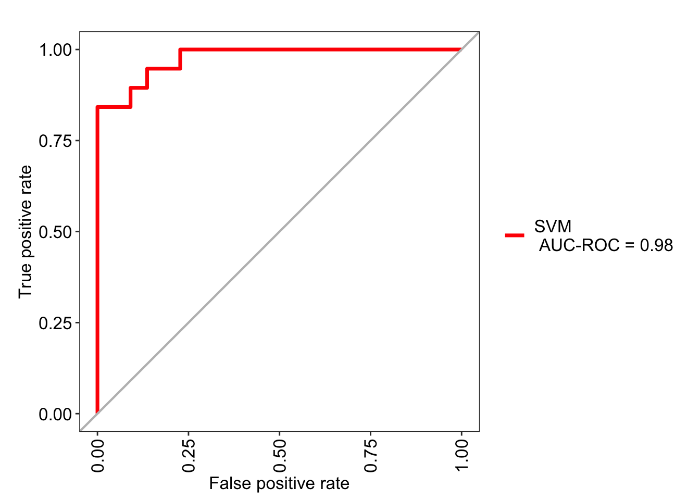
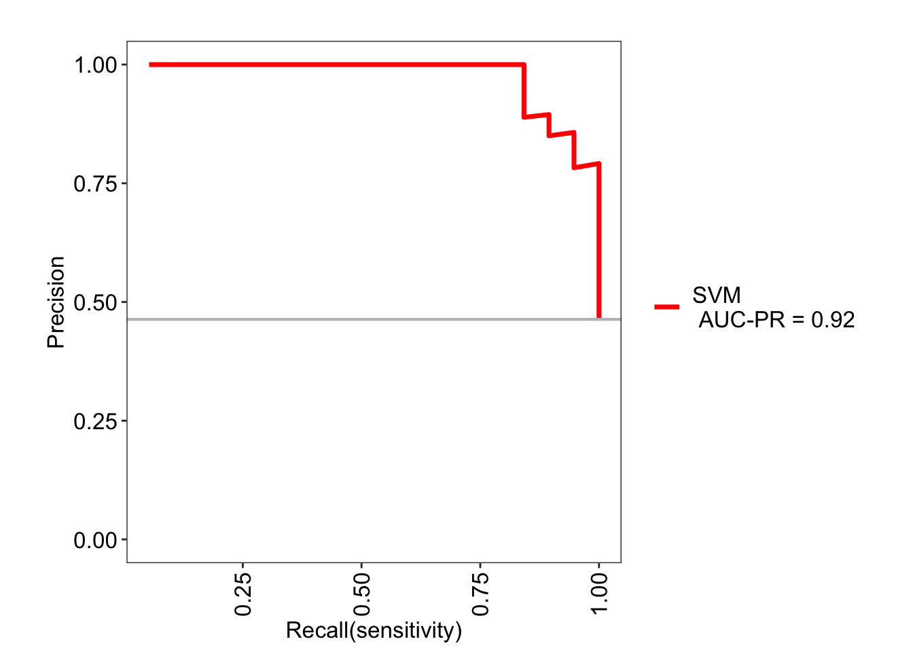

Chapter 7 Everyday ML: Regression
In the previous chapter, the goal of our task was to predict each sample into one of N categorical variables. The fundamentals of such a classification task carries over to regression problems, where the goal is to predict a continuous variable instead. As such, a regression task involves taking data, fitting a model, evaluating the model, then predicting a new instance. The differences however, lies in exactly how we train the data - as in, how do we measure the ‘closeness’ of our model to the ground truth? - and how we evaluate the model in the end prior to deployment. The R package suite tidymodels handles regression tasks elegantly, however, in this chapter - to be consistent with the previous chapter - we will use caret again.
As before, the explanation of ML concepts and the details into each algorithm is beyond the scope of this book, but more details are available on my blog as well as documentation for popular ML packages such as Python’s Scikit-Learn.
7.1 Simple linear regression
For this section we will use the Ozone dataset from mlbench, which involves prediction of the daily maximum one-hour-average ozone reading using various predictors such as humidity, temperature, and wind speed.
data(Ozone, package = "mlbench")
colnames(Ozone) <- c("Month", "DayOfMonth", "DayOfWeek",
"OzoneReading", "PressureHeight",
"WindSpeed", "Humidity",
"TemperatureSandburg", "TemperatureElMonte",
"InversionBaseHeight", "PressureGradient",
"InversionTemperature", "Visibility")
Ozone <- as_tibble(Ozone)
Ozone <- Ozone %>% select(-c(Month, DayOfMonth, DayOfWeek))
str(Ozone)## tibble [366 × 10] (S3: tbl_df/tbl/data.frame)
## $ OzoneReading : num [1:366] 3 3 3 5 5 6 4 4 6 7 ...
## $ PressureHeight : num [1:366] 5480 5660 5710 5700 5760 5720 5790 5790 5700 5700 ...
## $ WindSpeed : num [1:366] 8 6 4 3 3 4 6 3 3 3 ...
## $ Humidity : num [1:366] 20 NA 28 37 51 69 19 25 73 59 ...
## $ TemperatureSandburg : num [1:366] NA 38 40 45 54 35 45 55 41 44 ...
## $ TemperatureElMonte : num [1:366] NA NA NA NA 45.3 ...
## $ InversionBaseHeight : num [1:366] 5000 NA 2693 590 1450 ...
## $ PressureGradient : num [1:366] -15 -14 -25 -24 25 15 -33 -28 23 -2 ...
## $ InversionTemperature: num [1:366] 30.6 NA 47.7 55 57 ...
## $ Visibility : num [1:366] 200 300 250 100 60 60 100 250 120 120 ...Identifying the number of missing values first is important:
## OzoneReading PressureHeight WindSpeed
## 5 12 0
## Humidity TemperatureSandburg TemperatureElMonte
## 15 2 139
## InversionBaseHeight PressureGradient InversionTemperature
## 15 1 14
## Visibility
## 0For the purpose of this exercise, instead of imputation I will just discard the missing values.
## [1] 203 10For a quick look at the scales and the distribution of the variables, boxplots will do:
Ozone %>%
pivot_longer(everything(),
names_to = 'Var', values_to = 'Val') %>%
ggplot(aes(x = Var, y = Val)) + geom_boxplot() +
facet_wrap(~ Var, scales = 'free') + theme_bw()
As seen in the EDA chapter, a correlation plot can help visualize multicollinearity in the data:

Using caret’s findCorrelation() function, highly correlated predictors can be removed; the output corresponds to the indices of the highly correlated predictors to be removed.
highCor <- findCorrelation(cor(Ozone %>% select(-OzoneReading)),
cutoff = 0.9)
highCorCols <- Ozone %>% select(-OzoneReading) %>%
select(any_of(highCor)) %>% colnames()
Ozone <- Ozone %>% select(-any_of(highCorCols))
highCorCols## [1] "InversionTemperature" "TemperatureElMonte"A simple linear regression model using ordinary least squares is then built as such:
##
## Call:
## lm(formula = OzoneReading ~ ., data = Ozone)
##
## Residuals:
## Min 1Q Median 3Q Max
## -12.5051 -3.3213 -0.2129 3.0129 13.8078
##
## Coefficients:
## Estimate Std. Error t value Pr(>|t|)
## (Intercept) -1.577e+01 3.482e+01 -0.453 0.651148
## PressureHeight 6.846e-04 6.399e-03 0.107 0.914911
## WindSpeed 1.217e-01 1.806e-01 0.674 0.501307
## Humidity 9.021e-02 2.466e-02 3.658 0.000327 ***
## TemperatureSandburg 3.325e-01 5.093e-02 6.529 5.59e-10 ***
## InversionBaseHeight -7.348e-04 2.258e-04 -3.254 0.001341 **
## PressureGradient -8.341e-03 1.370e-02 -0.609 0.543293
## Visibility -7.132e-03 5.045e-03 -1.414 0.159029
## ---
## Signif. codes: 0 '***' 0.001 '**' 0.01 '*' 0.05 '.' 0.1 ' ' 1
##
## Residual standard error: 4.686 on 195 degrees of freedom
## Multiple R-squared: 0.684, Adjusted R-squared: 0.6726
## F-statistic: 60.29 on 7 and 195 DF, p-value: < 2.2e-16The ~ sign denotes that the OzoneReading variable (LHS) is predicted by . (RHS), which equates to the remaining variables in the data provided. The intercept of the model is fitted automatically.
The ANOVA table of the fitted model, which contains information such as the sum of squares for each predictor, is retrieved with anova():
## Analysis of Variance Table
##
## Response: OzoneReading
## Df Sum Sq Mean Sq F value Pr(>F)
## PressureHeight 1 4787.6 4787.6 218.0230 < 2.2e-16 ***
## WindSpeed 1 704.5 704.5 32.0844 5.235e-08 ***
## Humidity 1 2241.2 2241.2 102.0647 < 2.2e-16 ***
## TemperatureSandburg 1 1163.4 1163.4 52.9825 8.055e-12 ***
## InversionBaseHeight 1 315.0 315.0 14.3432 0.0002028 ***
## PressureGradient 1 11.9 11.9 0.5439 0.4616879
## Visibility 1 43.9 43.9 1.9987 0.1590293
## Residuals 195 4282.0 22.0
## ---
## Signif. codes: 0 '***' 0.001 '**' 0.01 '*' 0.05 '.' 0.1 ' ' 1For quick interpretation, let’s print out the content of the lm model fitted:
##
## Call:
## lm(formula = OzoneReading ~ ., data = Ozone)
##
## Coefficients:
## (Intercept) PressureHeight WindSpeed
## -1.577e+01 6.846e-04 1.217e-01
## Humidity TemperatureSandburg InversionBaseHeight
## 9.021e-02 3.325e-01 -7.348e-04
## PressureGradient Visibility
## -8.341e-03 -7.132e-03Above result suggests that for each unit change in PressureHeight, the OzoneReading variable is increased by 6.846e-04. Of course, since this is a multiple regression task (i.e., there are multiple predictors), the interpretation of the coefficient value is not as straightforward.
In ordinary least squares, the model attempts to minimize the residuals, which is the difference between the original data and the predicted data. Both of these can be retrieved as such:
This means that we can plot these for a nice visualization between the residuals and the fitted values:
plot(predict(lm_mod1), resid(lm_mod1),
main = 'Residuals vs. Fitted',
xlab = 'Fitted values',
ylab = 'Residuals')
A few observations can be made here; firstly, we see that the distribution of the points on either side of the residuals = 0 line seems random and evenly distributed. This suggests that modeling the current data with assumptions of linearity is valid. Secondly, there are no obvious outliers here, which means it is unlikely that our model is influenced by extreme values.
The root-mean-squared-error (RMSE) is the standard measure to use when evaluating regression models; RMSE is the squared root of the mean squared error in the predicted values.
## [1] 4.5927727.2 Using regression for prediction
With the advent of big data and ML, you are more and more likely to run into scenarios where regression is used to predict new data. In the previous example with the Ozone dataset, we fit the entire dataset using lm() and evaluated it using a within-sample method such as the RMSE. On the other hand, it’s possible to set aside a portion of the data, fit a model, use cross-validation metrics to tune the model, and evaluate the model one last time using never-before-seen data. Of course, with these concepts, we are firmly in the realm of ML - thus concepts from the previous chapter such as train/test split, model training, and model selection are carried over.
idx <- createDataPartition(y = Ozone$OzoneReading, p = .8,
list = FALSE, times = 1)
Ozone_train <- Ozone[idx,]
Ozone_test <- Ozone[-idx,]
paste0('Training data batch dimension: ', nrow(Ozone_train))## [1] "Training data batch dimension: 164"## [1] "Test data batch dimension: 39"As seen in the previous chapter, we split the original data using createDataPartition() to get the training and the test data. Then using trainControl() and train(), I can use a wrapper for a gradient boosted model for the regression task.
tr <- trainControl(method = 'cv',
number = 5, search = 'grid')
model <- train(OzoneReading ~ ., data = Ozone_train,
method = 'gbm', trControl = tr,
verbose = FALSE)
model## Stochastic Gradient Boosting
##
## 164 samples
## 7 predictor
##
## No pre-processing
## Resampling: Cross-Validated (5 fold)
## Summary of sample sizes: 132, 132, 130, 131, 131
## Resampling results across tuning parameters:
##
## interaction.depth n.trees RMSE Rsquared MAE
## 1 50 4.630898 0.6759574 3.655685
## 1 100 4.641358 0.6784356 3.603800
## 1 150 4.687776 0.6742934 3.632741
## 2 50 4.714275 0.6712452 3.631883
## 2 100 4.753206 0.6625908 3.584495
## 2 150 4.786053 0.6596358 3.598532
## 3 50 4.694933 0.6725721 3.549717
## 3 100 4.803256 0.6622239 3.601409
## 3 150 4.934647 0.6431102 3.693087
##
## Tuning parameter 'shrinkage' was held constant at a value of
## 0.1
## Tuning parameter 'n.minobsinnode' was held constant at
## a value of 10
## RMSE was used to select the optimal model using the
## smallest value.
## The final values used for the model were n.trees =
## 50, interaction.depth = 1, shrinkage = 0.1 and n.minobsinnode
## = 10.Evidently, caret uses grid search to find the combination of hyperparameters - in this case, n.trees, interaction.depth, shrinkage, and n.minobsinnode - which minimizes the RMSE. We could have defined our own hyperparameter space using expand.grid() and using that as input for tuneGrid = within train().
Briefly, the shrinkage refers to the learning rate, which describes the size of the incremental steps in gradient descent calculations. The interaction.depth describes the number of splits per tree and the n.trees describes the total number of trees, which means that for higher values of n.trees, the model complexity increases as well as the risk of overfitting the model.
Calling plot() method to the model object prints the boosting iterations versus the value we’re trying to optimize (i.e., RMSE):

Evidently, the interaction depth (i.e., tree depth) of 1 reaches the minimum RMSE at 100 boosting iterations. The best set of hyperparameters can be printed as such:
## n.trees interaction.depth shrinkage n.minobsinnode
## 1 50 1 0.1 10The holdout data is then used to generate predictions and calculate the RMSE and the R squared:
preds <- predict(object = model, newdata = Ozone_test)
rmse <- RMSE(pred = preds, obs = Ozone_test$OzoneReading)
r2 <- R2(pred = preds, obs = Ozone_test$OzoneReading)
paste0('Model RMSE: ', rmse)## [1] "Model RMSE: 4.45076380391138"## [1] "Model R2: 0.750807931113192"
7.3 Categorical predictors and factor encoding
Regression models typically require predictors to be numerical. Therefore, categorical predictors (i.e., factor variables which take on discrete values) need to be numerically encoded. There are two mainly used methods of numerical encoding of categorical predictors:
Reference coding: one class of categorical predictor is used as a reference and the rest of the classes are compared to the reference.
One-hot encoding: the number of unique classes is retained. The categorical variables are encoded as numeric arrays. This method is also called ‘dummy encoding.’
Let’s load the BostonHousing2 data from mlbench and look at the columns:
## tibble [506 × 19] (S3: tbl_df/tbl/data.frame)
## $ town : Factor w/ 92 levels "Arlington","Ashland",..: 54 77 77 46 46 46 69 69 69 69 ...
## $ tract : int [1:506] 2011 2021 2022 2031 2032 2033 2041 2042 2043 2044 ...
## $ lon : num [1:506] -71 -71 -70.9 -70.9 -70.9 ...
## $ lat : num [1:506] 42.3 42.3 42.3 42.3 42.3 ...
## $ medv : num [1:506] 24 21.6 34.7 33.4 36.2 28.7 22.9 27.1 16.5 18.9 ...
## $ cmedv : num [1:506] 24 21.6 34.7 33.4 36.2 28.7 22.9 22.1 16.5 18.9 ...
## $ crim : num [1:506] 0.00632 0.02731 0.02729 0.03237 0.06905 ...
## $ zn : num [1:506] 18 0 0 0 0 0 12.5 12.5 12.5 12.5 ...
## $ indus : num [1:506] 2.31 7.07 7.07 2.18 2.18 2.18 7.87 7.87 7.87 7.87 ...
## $ chas : Factor w/ 2 levels "0","1": 1 1 1 1 1 1 1 1 1 1 ...
## $ nox : num [1:506] 0.538 0.469 0.469 0.458 0.458 0.458 0.524 0.524 0.524 0.524 ...
## $ rm : num [1:506] 6.58 6.42 7.18 7 7.15 ...
## $ age : num [1:506] 65.2 78.9 61.1 45.8 54.2 58.7 66.6 96.1 100 85.9 ...
## $ dis : num [1:506] 4.09 4.97 4.97 6.06 6.06 ...
## $ rad : int [1:506] 1 2 2 3 3 3 5 5 5 5 ...
## $ tax : int [1:506] 296 242 242 222 222 222 311 311 311 311 ...
## $ ptratio: num [1:506] 15.3 17.8 17.8 18.7 18.7 18.7 15.2 15.2 15.2 15.2 ...
## $ b : num [1:506] 397 397 393 395 397 ...
## $ lstat : num [1:506] 4.98 9.14 4.03 2.94 5.33 ...The target variable is cmedv - the corrected median value of homes. There are additionally two categorical predictors here: town and chas. The chas variable has already been numerically encoded so we just need to encode town.
## [1] "# of levels: 92"There are nearly 100 levels in town, so for the sake of this exercise I will truncate the dataset so that it only contains the top 5 largest towns by size:
## # A tibble: 5 × 2
## town n
## <fct> <int>
## 1 Cambridge 30
## 2 Boston Savin Hill 23
## 3 Lynn 22
## 4 Boston Roxbury 19
## 5 Newton 18toptowns <- BH2 %>% group_by(town) %>% tally() %>%
arrange(desc(n)) %>% head(5) %>% pull(town)
BH2 <- BH2 %>% filter(town %in% toptowns) %>%
mutate(town = factor(town, levels = toptowns))Note I needed to re-factor the town variable after I reduced the number of levels.
Firstly, let’s see what happens if we fit the lm() model without encoding the town variable:
##
## Call:
## lm(formula = cmedv ~ ., data = BH2)
##
## Residuals:
## Min 1Q Median 3Q Max
## -7.3640 -1.9905 -0.1141 1.6872 9.5167
##
## Coefficients: (5 not defined because of singularities)
## Estimate Std. Error t value Pr(>|t|)
## (Intercept) -2.248e+02 3.390e+03 -0.066 0.947265
## townBoston Savin Hill -3.406e+02 1.830e+02 -1.862 0.065724 .
## townLynn -1.862e+02 1.028e+02 -1.811 0.073210 .
## townBoston Roxbury -3.545e+02 1.898e+02 -1.868 0.064835 .
## townNewton 1.788e+01 1.218e+01 1.468 0.145481
## tract -1.258e-01 6.939e-02 -1.813 0.072989 .
## lon -3.051e+01 4.140e+01 -0.737 0.462944
## lat -3.524e+01 5.507e+01 -0.640 0.523801
## crim 7.705e-02 4.645e-02 1.659 0.100452
## zn NA NA NA NA
## indus NA NA NA NA
## chas1 -1.288e+00 1.114e+00 -1.157 0.250237
## nox -2.920e+01 6.722e+00 -4.343 3.48e-05 ***
## rm 7.822e+00 6.910e-01 11.320 < 2e-16 ***
## age -9.919e-02 2.899e-02 -3.422 0.000915 ***
## dis -3.442e+00 1.573e+00 -2.188 0.031091 *
## rad NA NA NA NA
## tax NA NA NA NA
## ptratio NA NA NA NA
## b 1.840e-02 3.564e-03 5.163 1.31e-06 ***
## lstat -2.028e-01 8.412e-02 -2.411 0.017803 *
## ---
## Signif. codes: 0 '***' 0.001 '**' 0.01 '*' 0.05 '.' 0.1 ' ' 1
##
## Residual standard error: 3.286 on 96 degrees of freedom
## Multiple R-squared: 0.9167, Adjusted R-squared: 0.9037
## F-statistic: 70.48 on 15 and 96 DF, p-value: < 2.2e-16The categorical variables have evidently been reference-encoded: in the model output, there are 4 total coefficients belonging to the town variable, which is one less than the total number of classes in town (5). In this case, Cambridge class in town was used as the reference and the remaining 4 classes are interpreted relative to it.
Alternatively, a categorical variable can be one-hot encoded using model.matrix(), which outputs a sparse matrix with values of 1 and 0:
## townCambridge townBoston Savin Hill townLynn townBoston Roxbury
## 1 0 0 1 0
## 2 0 0 1 0
## 3 0 0 1 0
## 4 0 0 1 0
## 5 0 0 1 0
## 6 0 0 1 0
## townNewton
## 1 0
## 2 0
## 3 0
## 4 0
## 5 0
## 6 0The predictors are named similarly to the example of reference coding, such that the predictor name is concatenated to each class name. For each observation, the corresponding categorical level is filled with 1 while the remaining levels are filled with 0. For example, as the first 22 rows correspond to homes in Lynn, the townLynn column is populated with 1s and the others 0s. Using these encoded variables in lieu of the original factors is the standard approach in certain machine learning models, such as decision trees and ensemble learners.
7.4 Elastic net regression
One of the biggest challenges in predictive modeling is the balance between underfitting and overfitting to the training data. A widely used regularization strategy (i.e., constrain the model to reduce model complexity) is to add a penalty (or a cost) term to the objective function. In the case of simple linear regression, this would be like adding an extra term to the MSE function.
The L1 and L2 regularization techniques refer to adding an extra term to the objective function - namely, the L1 and L2 vector norms. The L1 vector norm describes the sum of the absolute values of the vector while the L2 norm describes the squared root of the squared values of the vector. The details are beyond the scope of this book, but for further reading check out my blog post on this subject.
As such, in linear models this turns out to be:
\(J(\theta) = MSE(\theta) + \alpha\frac{1}{2}\sum_{i = 1}^{n} |\theta_{i}|\)
\(J(\theta) = MSE(\theta) + \alpha\frac{1}{2}\sum_{i = 1}^{n} \theta_{i}^{2}\)
In regression, incorporating L1 and L2 regularization is as known as Lasso and Ridge regression, respectively. Meanwhile, Elastic Net regression uses a mixture of both techniques, with the hyperparameter \(\alpha\) describing the ratio of the two. In R, this can be implemented with the back-end glmnet which can be run on its own or as a wrapper in caret.
data(mtcars)
eln_mod <- train(mpg ~ ., data = mtcars,
method = 'glmnet',
preProcess = c('center', 'scale'),
trControl = tr)
eln_mod## glmnet
##
## 32 samples
## 10 predictors
##
## Pre-processing: centered (10), scaled (10)
## Resampling: Cross-Validated (5 fold)
## Summary of sample sizes: 25, 25, 26, 25, 27
## Resampling results across tuning parameters:
##
## alpha lambda RMSE Rsquared MAE
## 0.10 0.01029396 4.452870 0.6256119 3.654107
## 0.10 0.10293962 3.913182 0.6894015 3.233255
## 0.10 1.02939621 3.104474 0.8032698 2.540240
## 0.55 0.01029396 4.423287 0.6291525 3.629092
## 0.55 0.10293962 3.661364 0.7244250 3.012562
## 0.55 1.02939621 3.168239 0.7940001 2.610785
## 1.00 0.01029396 4.387221 0.6334478 3.597207
## 1.00 0.10293962 3.551244 0.7407368 2.929359
## 1.00 1.02939621 2.950957 0.8332474 2.364204
##
## RMSE was used to select the optimal model using the
## smallest value.
## The final values used for the model were alpha = 1 and lambda
## = 1.029396.We’re using the trControl defined previously, with a grid search for alpha and lambda (the shrinkage parameter). As before, calling bestTune prints out the set of hyperparmeters tested with the lowest loss.
## alpha lambda
## 9 1 1.029396